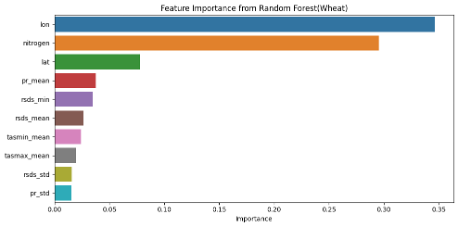
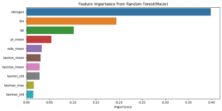
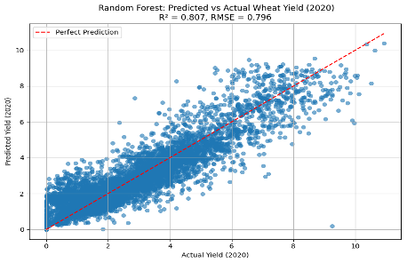
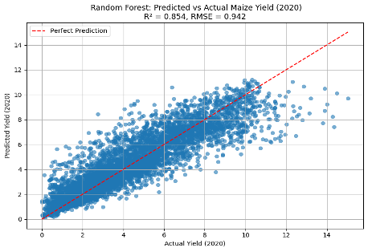
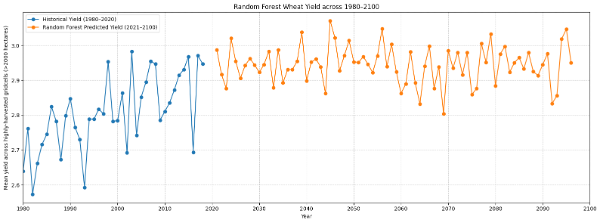
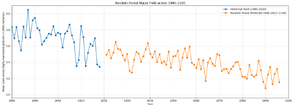

Predicting Future Crop Yield Under Climate Change with ML
Tools & Methods: Python (pandas, numpy, scikit-learn, xgboost, PyTorch/Keras), RF, XGBoost, LSTM (uni/bi), time-series preprocessing

Project Summary
Climate change shifts temperature, precipitation, and radiation patterns—directly impacting crop yields. Our team built Random Forest, XGBoost, and LSTM models to forecast maize and wheat yields using historical climate and soil data and then projected yields to 2100. Tree models delivered strong accuracy and interpretability on tabular summaries; a refined LSTM, trained on daily climate sequences, achieved competitive validation scores with improved generalization.
Dataset
- Source: AgMIP / AgML (Kaggle) — historical climate (daily tasmax/tasmin/pr/rsds), soil properties, yields, and nitrogen inputs
- Crops: Wheat and Maize
- Features: Tree models: aggregated stats per variable (mean, min, max, std), soil texture/class, nitrogen, coordinates; LSTM: raw daily climate sequences + static soil fused via feedforward layers
- Validation: Train on all years < 2020, hold out 2020 for evaluation; then generate projections for 2021–2100
How We Did It
- Preprocessing: built per-gridcell feature tables (tree models) and sequence tensors (LSTM); standardized numeric features
- Tree models: 100 estimators; XGB tuned with learning rate 0.1, depth 6, subsample 0.8 (sensible defaults), then validated on 2020
- LSTM: replaced hand-engineered stress features with raw daily sequences; fused static soil; regularized with early stopping
- Evaluation: R², RMSE on 2020; future projections (2021–2100) under scenario inputs
Quantified Results
- Random Forest (2020 validation): R² ≈ 0.81 (wheat), 0.85 (maize); residuals centered ≈ 0 (unbiased)
- XGBoost (2020 validation): R² ≈ 0.74 (wheat), 0.79 (maize); residuals centered ≈ 0
- LSTM (refined, 2020 validation): R² ≈ 0.74–0.78, RMSE ≈ 0.93–1.12 t/ha (substantial improvement over mean baseline)
- Projections (2021–2100): Wheat ≈ stable; Maize shows a gradual decline, consistent with heat-stress sensitivity
| Crop | Model | R² | RMSE (t/ha) |
|---|---|---|---|
| Wheat | Random Forest | 0.81 | 0.95 |
| Wheat | XGBoost | 0.74 | 1.09 |
| Wheat | LSTM | 0.74–0.78 | 0.93–1.12 |
| Maize | Random Forest | 0.85 | 0.88 |
| Maize | XGBoost | 0.79 | 1.02 |
| Maize | LSTM | 0.74–0.78 | 0.93–1.12 |
Numbers reflect 2020 temporal hold-out from the report; LSTM ranges are architecture variants.
Key Visuals (Random Forest)
Feature Importance


Nitrogen input dominates; precipitation, radiation, and Tmin/Tmax are strong climate drivers; spatial terms capture geography.
Actual vs Predicted (2020 Hold-out)


Tight alignment around the 45° line suggests low bias; dispersion reflects residual climate/management variance not captured by features.
Future yield projections (2021–2100)


The future yield projections (2021–2100) suggest wheat yield remains relatively stable, but maize yield shows a gradual decline.
Key Findings
- Models perform well under temporal hold-out: Tree ensembles achieve high R² on 2020; refined LSTM closes the gap using raw daily sequences.
- Drivers of yield: Nitrogen availability is consistently the #1 predictor; climate variables (precipitation, radiation, min/max temperature) and spatial factors are also critical.
- Climate-risk signal: Future projections indicate relatively stable wheat yields but a slow decline for maize, reflecting maize’s heat sensitivity.
- Methodological lesson: Simplifying LSTM inputs (raw sequences + regularization) outperformed feature-engineered LSTM variants and reduced bias.